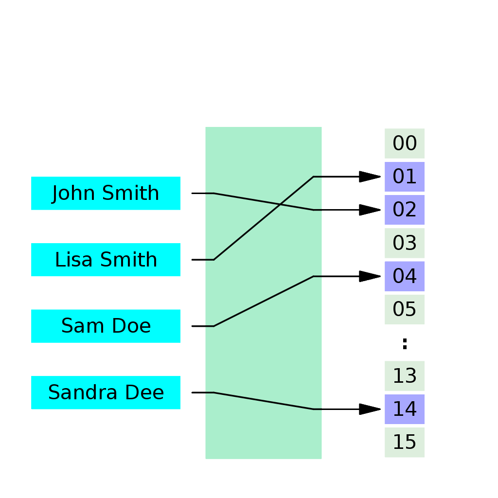

Existuje mnoho různých šifrovacích algoritmů, které se liší v různých ohledech, jako je jejich úroveň bezpečnosti, rychlost a efektivita. Níže je uveden seznam některých známých a často používaných šifrovacích algoritmů:
Advanced Encryption Standard (AES): Jedna z nejrozšířenějších symetrických šifrovacích metod. AES nahradil starší šifrovací standard DES a je používán ve širokém spektru aplikací.
Data Encryption Standard (DES): Jedna z prvních šifrovacích metod používaných v 70. a 80. letech 20. století. Dnes je již považován za zastaralý a je nahrazen modernějšími algoritmy jako je AES.
Rivest-Shamir-Adleman (RSA): Asymetrický šifrovací algoritmus používaný pro šifrování a digitální podpisy. RSA je založen na matematických vlastnostech faktorizace velkých prvočísel a je široce používán v kryptografii.
Elliptic Curve Cryptography (ECC): Další asymetrický šifrovací algoritmus, který je založen na algebře eliptických křivek. ECC je efektivnější než RSA při stejné úrovní bezpečnosti a je často používán v mobilních zařízeních a dalších omezených prostředích.
Blowfish: Symetrický blokový šifrovací algoritmus navržený pro rychlost a flexibilitu. Je používán například v síťových protokolech nebo v softwarových produktech.
Twofish: Další symetrický blokový šifrovací algoritmus, který je variantou algoritmu Blowfish. Twofish byl finalistou soutěže AES, ačkoli nakonec nebyl zvolen jako standard.
ChaCha20: Moderní proudový šifrovací algoritmus, který je rychlý a bezpečný. Je často používán v různých aplikacích, včetně šifrování internetového provozu a mobilních aplikací.
3DES: Třikrát opakovaná verze DES, která byla navržena k zlepšení bezpečnosti DES při zachování zpětné kompatibility. I když je stále používán v některých systémech, je obecně považován za zastaralý.
Tyto algoritmy představují jen malý výčet mnoha šifrovacích metod, které jsou k dispozici. Každý z těchto algoritmů má své vlastní výhody a nevýhody a je vhodný pro různé použití a prostředí.
